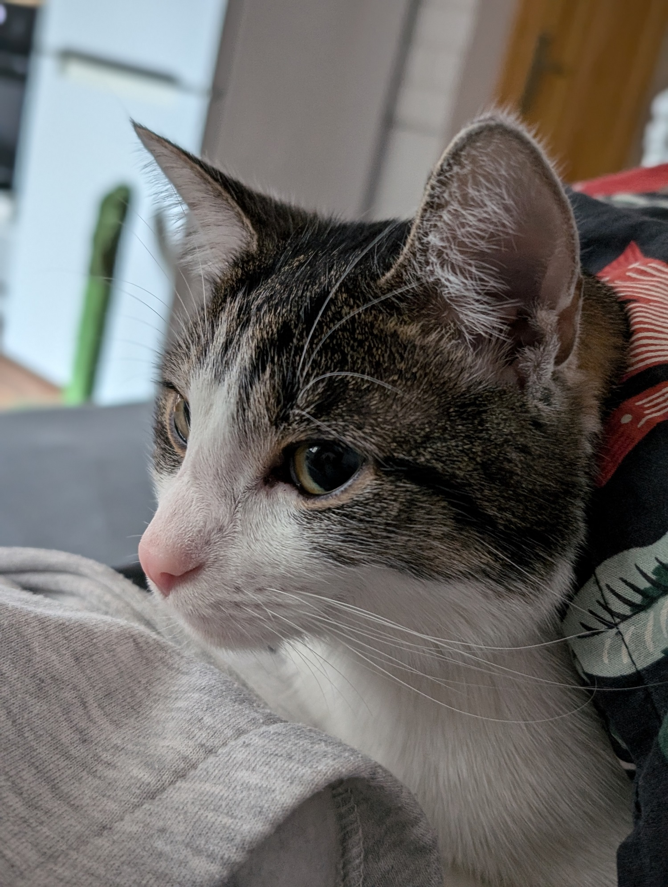

Strona główna
To jest kot Oliszon vel Burczysław i wita was na tej stronie. Ma dwa lata, znany jest z wszelakich psot. Czasem miziasty, a czasem niebezpieczny jak tygrys. Uwielbia wszelkiego rodzaju kocie przysmaki i skakanie po suficie. Kot Oliszon użyczył swojego wizerunku by zaprezentować działanie CSS Grida :)
Zapraszam do czytania moich wspaniałych wpisów w zakładce Aktualności